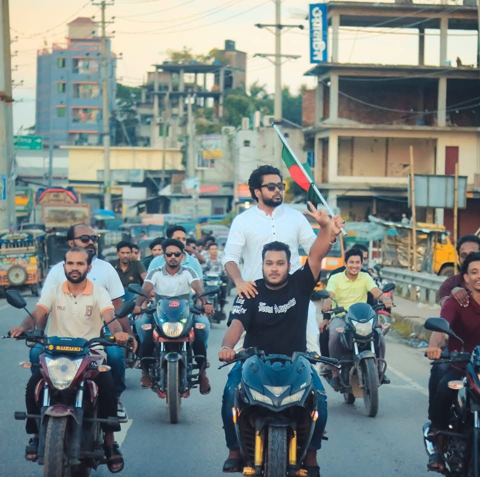

শহীদ রাষ্ট্রপতি জিয়াউর রহমানের আদর্শে অনুপ্রাণিত হয়ে বাংলাদেশ জাতীয়তাবাদী ছাত্রদলের রাজনীতিতে এক দশকেরও বেশি সময় ধরে গণতান্ত্রিক আন্দোলন, ছাত্র অধিকার ও ভোটাধিকার পুনরুদ্ধারের সংগ্রামে অগ্রভাগে থাকা একজন সংগঠক।

আদর্শবান, ত্যাগী ও রাজপথের পরীক্ষিত একজন তরুণ রাজনৈতিক কর্মী — যিনি চরম প্রতিকূলতার মুখেও আদর্শিক অবস্থান থেকে সরে যাননি।
২০১৪ সাল থেকে বাংলাদেশ জাতীয়তাবাদী ছাত্রদলের রাজনীতিতে সক্রিয়ভাবে যুক্ত থেকে দীর্ঘ এক দশকেরও বেশি সময় ধরে গণতান্ত্রিক আন্দোলন, ছাত্র অধিকার রক্ষা এবং গণমানুষের ভোটাধিকার পুনরুদ্ধারের সংগ্রামে অগ্রভাগে ভূমিকা পালন করেছেন। গ্রেফতার, শারীরিক-মানসিক নির্যাতন এবং ৪৩ দিনের কারাবরণ সত্ত্বেও নিষ্ঠা, সাহসিকতা ও দক্ষতার সাথে প্রতিটি সাংগঠনিক দায়িত্ব সম্পন্ন করেছেন। মাঠ পর্যায়ের আন্দোলনের পাশাপাশি কেন্দ্রীয় প্রচার কার্য এবং জাতীয় নির্বাচনে প্রযুক্তিভিত্তিক ভোট মনিটরিং প্যানেলে দায়িত্ব পালনকারী একজন বিচক্ষণ ও আধুনিক রাজনৈতিক সংগঠক।
বাংলাদেশ জাতীয়তাবাদী ছাত্রদল — নেতৃত্ব ও আন্দোলন ভূমিকায় এক দশকেরও বেশি সময় ধরে সম্পৃক্ত।
বেসরকারি বিশ্ববিদ্যালয় ছাত্রদল — কেন্দ্রীয় কমিটি।
বিএনপির কেন্দ্রীয় নির্বাচন অফিস (জাতীয় নির্বাচন ২০২৬)।
ঢাকা-১৭ আসন, জাতীয় নির্বাচন ২০২৬।
২০১৪ সাল থেকে বিরোধী রাজনৈতিক পরিবেশের মধ্যেও ক্যাম্পাস ও রাজপথে মিছিল, সমাবেশ, হরতাল ও অবরোধে অগ্রভাগে থেকে ছাত্রসমাজকে সংগঠিতকরণ।
২০২৬ সালের জাতীয় নির্বাচনে বিএনপির কেন্দ্রীয় নির্বাচন অফিসের রেজাল্ট মনিটরিং প্যানেলে কারিগরি দায়িত্ব; ঢাকা-১৭ আসনে প্রচার কৌশল প্রণয়ন।
প্রেস বিজ্ঞপ্তি, সামাজিক যোগাযোগ মাধ্যম ও সাংগঠনিক প্রচারপত্র তৈরির মাধ্যমে দলীয় আদর্শ ও গণমুখী বার্তা শিক্ষার্থীদের মাঝে ছড়িয়ে দেওয়া।
গ্রেফতার, নির্যাতন, আত্মগোপন ও পারিবারিক প্রতিকূলতার মধ্যেও দলীয় আদর্শ ও সংগঠনের সাথে অবিচল আনুগত্য বজায় রাখা।
গ্রেফতার ও কারাভোগ (৭ ডিসেম্বর ২০২২): নয়াপল্টনস্থ বিএনপির কেন্দ্রীয় কার্যালয়ে অবস্থানকালে গ্রেফতার হন। দফায় দফায় শারীরিক-মানসিক নির্যাতনের শিকার হয়ে কারাভিভাগে প্রেরিত হন। দীর্ঘ ৪৩ দিন কারাভোগের পর উচ্চ আদালত থেকে জামিনে মুক্তি পান।
রাজনৈতিক হয়রানি ও আত্মগোপন: পুলিশি অভিযান ও ধারাবাহিক হয়রানির কারণে দীর্ঘদিন আত্মগোপনে থাকতে বাধ্য হন, যার প্রভাবে উচ্চশিক্ষার ধারাবাহিকতাও মারাত্মকভাবে ব্যাহত হয়।
আইনি জয়লাভ (২০২৫): রাজনৈতিক উদ্দেশ্যপ্রণোদিত মিথ্যা মামলাসমূহে দীর্ঘ আইনি লড়াই শেষে সকল মামলা থেকে সম্মানের সাথে অব্যাহতি লাভ করেন।
← পাশে স্ক্রল করে পুরো সময়রেখাটি দেখুন →
জাতীয়তাবাদী ছাত্রদলের রাজনীতির সাথে আনুষ্ঠানিক সম্পৃক্ততা; প্রাইভেট বিশ্ববিদ্যালয় কেন্দ্রিক ছাত্রদল পুনর্গঠন ও কর্মী সংগ্রহ।
ক্যাম্পাস ও ঢাকার গুরুত্বপূর্ণ পয়েন্টে প্রতিবাদ মিছিল এবং কেন্দ্রীয় রাজনৈতিক কর্মসূচিতে সক্রিয় উপস্থিতি।
বেগম খালেদা জিয়ার কারাবাস ও একতরফা নির্বাচনের প্রতিবাদে বিক্ষোভ, মিছিল ও হরতাল কর্মসূচিতে শিক্ষার্থীদের সংগঠিত করা।
হাইকোর্ট ও নয়াপল্টন কেন্দ্রিক প্রতিবাদ মিছিল এবং ছাত্রদলের কেন্দ্রীয় প্রতিবাদ সমাবেশে সক্রিয় নেতৃত্ব।
স্বাস্থ্যবিধি মেনে সীমিত আকারে সাংগঠনিক যোগাযোগ রক্ষা এবং দুর্দশাগ্রস্ত শিক্ষার্থীদের মাঝে ত্রাণ সহায়তা।
দ্রব্যমূল্যের প্রতিবাদে দেশব্যাপী মানববন্ধনে ছাত্রসমাজকে উদ্বুদ্ধকরণ ও মিছিলে নেতৃত্ব।
বেসরকারি বিশ্ববিদ্যালয় ছাত্রদল কেন্দ্রীয় কমিটির প্রচার সম্পাদক নির্বাচিত। ৭ ডিসেম্বর নয়াপল্টন থেকে গ্রেফতার হয়ে ৪৩ দিন কারাভোগ ও নির্যাতন সহ্য।
জামিনে মুক্তির পর পুনরায় রাজপথে; একদফা দাবিতে অবরোধ-হরতালে ঝটিকা মিছিল পরিচালনা ও মাঠ সমন্বয়।
ডামি নির্বাচন বর্জনের পক্ষে প্রচারণা; ২০২৪-এর ছাত্র-জনতার ঐতিহাসিক আন্দোলনে সক্রিয় অংশগ্রহণ।
দীর্ঘ আইনি লড়াই শেষে রাজনৈতিক মামলা থেকে অব্যাহতি অর্জন; নেতাকর্মীদের সংগঠিত ও ছাত্রদলকে শক্তিশালীকরণ।
বিএনপির কেন্দ্রীয় নির্বাচন অফিসে রেজাল্ট মনিটরিং প্যানেলে গুরুত্বপূর্ণ ভূমিকা; ঢাকা-১৭ আসনের প্রচার ও ভোট ব্যবস্থাপনা কমিটির সক্রিয় সদস্য।
{kind=link}
{kind=link}
{kind=link}
{kind=link}
{kind=link}
{kind=link}
{kind=link}
{kind=link}